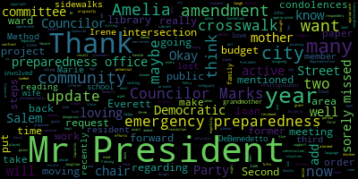

[Falco]: 7-0-1. We're going to get started. I'm sure Councilor Morell will be joining us shortly. It's going to take me a couple of minutes just to read this beginning piece. So we'll get started. The 17th regular meeting of the Medford City Council will now come to order. Clerk Curnaby, please call the roll.
[Hurtubise]: Councilor Bears? Present. Vice President Caraviello? Present. Councilor Knight? Present. Councilor Marks? I saw Councilor Marks, I haven't heard Councilor Marks. Here he is. Councilor Marks. Councilor Marks, you present? Present. Thank you. Councilor Morell. I still don't see Councilor Morell. I'll come back to her. Councilor Scarpelli. Here. President Falco. Present.
[Falco]: Six members present, one absent. At this point, I ask everyone to please rise to salute the flag. I pledge allegiance to the flag of the United States of America, and to the republic for which it stands, one nation, under God, indivisible, with liberty and justice for all.
[Hurtubise]: Councilor Morell is here.
[Falco]: All seven members are present. Councilor Morell is here. All seven members are present.
[Hurtubise]: I think I actually have to call her name just to make it official. Councilor Morell, are you here?
[Falco]: Yes.
[Hurtubise]: Thank you.
[Falco]: Okay, all Senate members are present. So today we're being broadcast live on channel 22 on Comcast and channel 43 on Verizon. Pursuant to Governor Baker's March 12, 2020 order suspending certain provisions of the Open Meeting Law, General Law Chapter 30A, Section 18 in the Governor's March 15, 2020 order imposing strict limitation on the number of people that may gather in one place, this meeting in the Bedford City Council will be conducted via remote participation to the greatest extent possible. specific information and the general guidelines for remote participation by members of the public and or parties with a right and or requirement to attend this meeting can be found on the City of Medford website at www.medfordma.org. For this meeting members of the public who wish to listen or watch the meeting may do so by accessing the meeting link contained herein. No in-person attendance or members of the public will be permitted, but every effort will be made to ensure that the public can adequately access the proceedings in real time via technological means. In the event that we are unable to do so, despite best efforts, we will post on the City of Medford or Medford Community Media website an audio or video recording, transcript, or other comprehensive record of proceedings as soon as possible after the meeting. You can join the Zoom meeting, https://zoom.us, forward slash J, forward slash 981-997-08547, meeting ID 981-9970-8547. OneTap Mobile, 1-929-205-6099, 981-997-708547, pound U.S. 13017158559298199708547 pound US. Dial your location. 19292056099US13017158592US. The meeting ID is 98199708547. Let's see, find your local Zoom and find your local number, HTTPS colon forward slash forward slash zoom.us forward slash U forward slash A B Y O S B three O V D. Okay. Motions, orders, and resolutions. Two zero dash three five seven. Be it resolved that the Medford city council request that the city administration examine the benefits of offering an early retirement incentive program and report to the council, its findings, council and I. Mr. President, thank you very much.
[Knight]: There's much uncertainty surrounding our financial situation in the city of Medford. And I think the only certainty that we have is that times are bad right now and that we forecast the revenues that aren't meeting our expectations. And when we come into situations like this, there are many ways that we can address the financial crisis. before us, and one of those ways is to offer early retirement incentives to employees that have been working in the City of Medford for an extended period of time, make a good deal of money, top staff. and that sometimes pay—sometimes contribute less into the pension fund based upon, you know, whenever they were hired. So, you know, this 5 percent contribution rate, 7 percent, 9 percent, 9 plus 2 percent. So this is a way, Mr. President, of getting individuals off the rolls that were contributing at a lower rate. which will, in essence, provide us with a cost savings. Through the administration to the retirement board and report be issued back to the city council examining the feasibility of such.
[Falco]: Thank you, councilor. Vice president Caraviello. Oh, no, I'm sorry, I thought you had your hand up. Any other questions from the council? Second the motion, Mr. President. Any community participation on this? Clerk Hurtubise, any emails?
[Hurtubise]: Mr. President, there are no emails on this. So far, I have an email on one topic for tonight, and it's later in the evening.
[Falco]: OK, thank you. OK, on the motion of council all night, seconded by Vice President Caraviello. Clerk Hurtubise, please call the roll.
[Hurtubise]: Councilor Bears? Yes. Vice President Caraviello? Yes. Councilor Knight? Yes. Councilor Marks? Yes. Councilor Morell? Yes. Councilor Scarpelli? Yes. President Falco?
[Falco]: Yes, seven affirmative, zero in the negative, the motion passes. 2-0-358 offered by Councilor Knight. Be it resolved that the Medford City Council request a report from the administration on the following items. Number one, amount of private supplemental funds raised to date for the construction of the Medford Public Library. Number two, amount of the grant received from the state for the construction of the Medford Public Library and whether or not it is anticipated this award will be reduced. If so, to what amount? And number three, the total cost for the construction of the Medford Public Library. Number four, anticipated necessary appropriation by the city council to fund the construction of the Medford Public Library. Councilor Knight.
[Knight]: Mr. President, thank you very much. Again, as we look at the fiscal picture that's before CFO Fiscal Year 21, there are many uncertainties. We met with our consultant just a couple weeks ago. We talked about our fixed costs, what they were, knowing what they are. We have made commitments in this community to capital projects and capital needs. One of those projects that's underway right now is the library. And there is going to have to be a appropriation made by the city to complete construction for this project. Then we have also a commitment for construction of a new fire station. So when we look at these capital needs with the fiscal picture that's before us, Mr. President, I think it's important that we understand going forward what it is that we need to do. Some of our colleagues in government have been very vocal in their desires to borrow, spend, and tax their way out of this fiscal crisis. And I don't necessarily think that that's the best practice, Mr. President. So before we start determining what road we have to take, I think we need to get all the information before so that we can make an informed decision. So with that being said, Mr. President, I ask my council colleagues to support this resolution moving forward. I think this information will provide helpful when we develop a budget capital plan.
[Falco]: Thank you, Councilor Knight. On the motion of Councilor Knight, seconded by Councilor Scarpelli, Vice President Caraviello.
[Caraviello]: Thank you, Mr. President. Mr. President, I can give you some insight. I can't give you the exact numbers on this, but I'm a member of the private foundation that's raising supplemental funds. We were going along at a pretty good clip raising funds, but unfortunately, this has kind of put a little bit of a halt uh, to what we've been able to raise at this particular moment. Um, we've raised a little bit over a million dollars so far that we have had commitments for our summer paid some months. Uh, but I think the people who committed will continue to, uh, to commit. Uh, so, and, uh, we have a private donation from, from, uh, the Bloomberg foundation, uh, which, which has been committed to, I'm not at liberty to say the number at this moment. I think, I think many people have heard the number. But, uh, we were hoping that, uh, we'd invite the Bloombergs into, into Medford, hopefully in September, October to make the official, uh, gift, uh, to us. And we're also hoping, uh, uh, Barry Sloan, who's, uh, uh, is going to maybe go back to them and maybe they'll have a change of heart, uh, and hopefully, uh, up the gift that they were going to give to a little higher number. So again, Question number two, the original grant was for $12 million. That grant for the $12 million was based on the original estimate of the library, which came in at around the $33 million mark. The library cost is now down to $27 and change, and you take away the $12. It brings it down but as the as the as council may lose you as as the number of the the price of library goes down so does the grants so If I understand the grant now is down to about ten five From the original twelve in and as we keep cutting and changing then the grant is going to go down. So As you cut yeah, you just sort of doing nothing because you're cutting the grant. So that kind of makes no sense to do that. The total cost for the construction with the original grant is somewhere around 17 and change. We're hoping right now with the money raised and the gifts by the Bloomberg, The number is down to about 13-ish. We were hoping to get the number down into somewhere between the 10 to 12 area, which would be a steal for the city of Medford to get a library for $12 million or less. So that's the original goal. Hopefully, the fundraising has not stopped, but it's kind of at an impasse right now due to the situation here. But like I said, If if the library would it would no money raised Right now that the numbers around 17 and change but is a with it with the gifts and capital Money raised it's right now. It's around the 13 ish area So again, hopefully the fundraiser will continue after this again fundraising, you know, it's a It's a two or three-year commitment. We haven't even gone out to the community yet to start raising money from the citizens of Medford, though a few have donated. So that's where we're at. But the number right now would be, if we would had to stop right now, it'd be in around the $13 million area. It would take a few dollars.
[Knight]: Thank you, Councilor Caraviello.
[Caraviello]: Thank you, Vice President. The administration can give you a more specific numbers, but those are guesstimate numbers. Okay, thank you.
[Falco]: Councilor Bears.
[Bears]: Thank you, Mr. President. Just a clarification, Rick. Use the phrase cutting and changing as are there cuts and changes being made to the project or are you saying that that might uh, Yeah, I know the administration, uh at the building meeting.
[Caraviello]: Let's say they've made some changes on the brick and things uh, let's say uh, let's say as the price drops so does the grant I gotta say because the original price of the library was in the 33 million dollar area and it came in at 27 so let's say the the 12 and change dropped to 10 to 10 5 So it might vary a little bit. Hopefully, I've reached out to Representative Donato. And maybe in his leadership position, we can get the library foundation to adhere to the $12 million grant. And maybe we won't lose the money due to the cost of the project being less than anticipated. So that would be a big plus.
[Bears]: Thanks, Rick. Just one other quick question. Is it cosmetic changes to reduce the price or are there substantive?
[Caraviello]: I think from what I'm hearing right now, it's just like cosmetic changes. I would hope there aren't any substantive changes.
[Bears]: All right, so the building is still net zero and all that as far as you.
[Caraviello]: Yeah, yeah.
[Bears]: Got it, thank you.
[Falco]: Okay, thank you, Councilor Bears. Thank you, Vice President Caraviello for the update. Councilor Marks.
[Marks]: Thank you, Mr. President. It might be appropriate at this point that we have a project update also here, and I appreciate the work Vice President Capiello has done on this. He was one of the leaders in moving this library forward and was the person that came out originally and alarmed the city that there was a potential grant out there some years ago. And I think that's why we're in the situation we are now moving forward on a state-of-the-art library. But I would ask, Mr. President, if we can have a separate meeting, maybe a committee of the whole, where we can have a project update on where we stand with construction and the private foundation, and if we are going to meet our goals.
[Falco]: Thank you, Councilor Mark. Would you like to add that as an amendment?
[Marks]: Yes. Second, Mr. President.
[Falco]: Thank you, Councilor Knight. Any other comments from the council? Any community participation on this matter? Clerk Hertovich, have you received any emails?
[Hurtubise]: Mr. President, I have not. I've received no emails. Just on one topic for later tonight, and that participant may speak at the meeting.
[Falco]: Okay, thank you. On the motion of Councilor Knight, seconded by Councilor Scarpelli, as amended by Councilor Marks, Clerk Hertovich, please call the roll.
[Hurtubise]: Councilor Bears? Yes. Vice President Caraviello? Yes. Councilor Knight? Yes. Councilor Marks? Yes. Councilor Morell? Yes. Councilor Scarpelli? Yes. President Falco?
[Falco]: Yes. Seven in the affirmative, zero in the negative. The motion passes. 20-359 offered by Councilor Knight. Be it resolved that the Director of Substance Abuse Prevention conduct an analysis on the trends relative to substance abuse during the government shutdown and report back to the Council the findings. Councilor Knight.
[Knight]: Mr. President, thank you very much. In times like this, it's very odd because, you know, when crisis arises, people rely on government more. I think that our Office of Substance Abuse Prevention has done an excellent job over the years in addressing the concerns that we've had in this community. I certainly think that we've made great strides in combating the opioid addiction in the city of Medford and other substance abuse problems that we've seen here. With that being said, Mr. President, with the government shutdown comes a change in our ability to deliver services at the same level. that we were delivering them before. So I just ask that the Office of Substance Abuse and Prevention report back to us what the current trends are, what they're seeing, so that we can be better informed and more aware of what approaches need to be taken to continue to be successful in combating opioid addiction in the city of Manhattan.
[Falco]: Thank you, Councilor Knight. Any other comments from the Council?
[Bears]: Second, Mr. President.
[Falco]: Okay, on the motion of Councilor Knight, seconded by Councilor Bears. Any comments from the community? Okay, on that motion, clerk. Mr. President, no emails. On the motion of Councilor Knight, seconded by Councilor Bears, clerk, please call the roll.
[Hurtubise]: Councilor Bears. Yes. Vice President Caraviello. Yes. Councilor Knight. Yes. Councilor Marks. Yes. Councilor Morell. Yes. Councilor Scarpelli. Yes. President Falco.
[Falco]: Yes, 70 affirmative, zero in the negative, the motion passes. 20-360 offered by Council and I, be it resolved that the city administration provide the Medford City Council with a copy of the emergency response plan preparing for an instance of or event where the coronavirus infects our essential personnel.
[Knight]: Council and I. Yeah, Mr. President, I think as we learn more and more about the coronavirus, one of the things we've been able to really appreciate is the work that our first responders perform, our firefighters, our police officers, our DPW and the like. And it gets me thinking, Mr. President, what happens if, say, there's a coronavirus outbreak among all the members of B group in the fire department? What happens then? Or if one firehouse becomes infected and two or three groups in the same firehouse become infected? What's our emergency response plan? What steps are we taking to be sure that the community is going to be safe and that we're going to be able to deliver the high level of quality public safety services that we've been able to deliver in the past? So I offer this resolution, hoping to learn a little bit more about this, Mr. President, so that we operate to address any type of issue like this in the community. You know, when we pick up the phone and we call 911, these are the people that we rely on. So I think that it only makes sense that we show some concern. as to what's going on in their lives, and be sure that there are plans in place to protect them, number one, and number two, to be sure to deliver the same levels of protection to the citizenry here in the city.
[Falco]: Thank you, Councilor Knight. Councilor Bears.
[Bears]: Thank you, Mr. President. I'd just like to propose a B paper to this, completely agree with Councilor Knight. Also, getting an update on what efforts have been made to provide all the PPE that our first responders need, and any other safety that we've been able to implement.
[Knight]: Second that, Mr. President.
[Falco]: Thank you, Councilor Knight. Thank you, Councilor Bears. Councilor Marks, one second. Clerk Hurtubise, do you have the language on the... I've got it, yes.
[Hurtubise]: I got it.
[Falco]: Okay, so on the motion of... Actually, Councilor Marks.
[Marks]: Thank you, Mr. President. In line with this, which I support this resolution wholeheartedly, if we can get an update from our emergency preparedness office regarding what steps have been taken over the last three months, if any. Councilor Marks, is that an amendment or is it a request? Either way, if the councilor doesn't mind, I'll add it to his request. If not, I'll do it as amendment.
[Falco]: Why don't we add that to the original? We'll add that as an amendment to the original motion. Is that okay, Councilor Knight? That's fine.
[Marks]: Can I have that language back, please? I didn't get it all down. That we receive an update from the emergency preparedness office. Okay. Regarding what steps, as Councilor Knight mentioned, to safeguard our public safety officials and first responders. Okay. You know, every year, Mr. President, if I could add, We fund the emergency preparedness office in the budget, and it's pitiful of the amount of money that we put in there. I want to say maybe $1,500 for a city this size, maybe $2,000, and I can't remember the exact number. But it's really next to nothing. And in a time of need that we see now, it really makes you think, how are we prepared to handle issues that we confront as a community? And so I think it's important maybe during the budget that we also revisit what's spent for emergency preparedness in our community as well.
[Falco]: Thank you, Councilor Marks. Any other comments from the council?
[Caraviello]: Second the motion, Mr. President.
[Falco]: Any other comments from the community or any emails, Clark-Hernandez?
[Hurtubise]: There are no emails, Mr. President.
[Falco]: Thank you. We will take the B paper first that was offered by Councilor Bears and seconded by Councilor Knight. Would you like to read the language back in the B paper, Clark-Hernandez?
[Hurtubise]: The B paper is to get an update on efforts made to date to provide PPE to first responders.
[Falco]: On that motion, Clerk Kurtopis, please call the roll.
[Hurtubise]: Councilor Bears? Yes. Vice President Caraviello? Yes. Councilor Knight? Yes. Councilor Marks? Yes. Councilor Morell?
[Falco]: Yes.
[Hurtubise]: Councilor Scarlatti? Yes. President Falco?
[Falco]: Yes. Seven in the affirmative, zero in the negative, the motion passes. On the original paper that was offered by Councilor Knight, Clerk Kurtopis, did that have a second?
[Caraviello]: I second it, Mr. President.
[Falco]: Seconded by Vice President Caraviello as amended by Councilor Marks. Please call the roll.
[Hurtubise]: Councilor Bears. Yes. Vice President Caraviello. Yes. Councilor Knight. Yes. Councilor Marks. Yes. Councilor Morell.
[Falco]: Yes.
[Hurtubise]: Councilor Scarpelli. Yes. President Falco.
[Falco]: Yes, 7 in the affirmative, 0 in the negative, the motion passes. 2-0-361 offered by Vice President Caraviello. Be it resolved that the Medford City Council ask the mayor to install clear plexiglass panels in all the chambers in an effort to safely separate council members. Be it further resolved that the Medford City Council is be administered COVID-19 testing. With the upcoming budget meetings approaching, council members meet on a frequent basis. It must feel comfortable working with each for extended periods of time. Vice President Caraviello.
[Caraviello]: Thank you, Mr. President. Mr. President, we've been out of the chambers for a long time, and I know we're getting close to getting back there. But similar to like what the grocery stores have done and everything, they put up pussy class barriers in between everybody to keep When people are somewhat of a closer of a quarter, it keeps them separated from each other. I think that would be a good step for a temporary measure until the situation passes. Further, I know many members of City Hall have been tested already, but I think that the council should be tested also, seeing that we're going to be working with each other. in close quarters for an extended period of time. And just to make sure that everyone is comfortable with everybody, knowing that we're all safe with each other. So it's a suggestion and hopefully my other councils agree and we can get back in the city hall and start working. And it isn't just for the city council, it's for the school committee, it's for all the boards and commissions who meet. So again, it's time we get back into the people's chamber.
[Morell]: Thank you, Vice President Caraviello. Councilor Morell. Thank you, Mr. President. I appreciate my colleagues focus on safety, but I'm just a little lost as to when we decided or how it was decided that we would be back in the chambers for this type of stuff. I do understand the frustration with these types of meetings. There's a certain amount that gets lost in them, but I think this, what we're doing right now is the temporary measure. We think there is a challenge with testing. We can test the city council and then we go and around our spouses who might be going to work or going to places. And that test doesn't matter if we're exposed in the next day. And if you've been paying attention to the news, the things that matter as far as contracting this is space and time. And if we're together for hours and we're in places where workers have to be because they can't work from home, I think it's just a risk. And again, I appreciate the idea behind this, but I feel like I'm a little lost as to where everyone going back to City Hall has been decided upon at this point.
[Caraviello]: For your information, Mr. President. For your information, Councilor Cavillo. Well, I think earlier this evening, I think it was the mayor says they're coming up with a plan for us to get back, open up City Hall and for us to get back in there. So it's coming hopefully very soon. So it's not, I don't think we're going to be out of there another month or two months, but it is getting close to it happening.
[Falco]: Councilor Morell, no decision has formally been made for us to go back into Alden Chambers to conduct business yet. I know there's been numerous agenda items on the agenda to talk about this. There's been different, I know during our meetings, I know a lot of Councilors would like to get back to City Hall. But no formal decision has been made to actually have our meetings back there yet. I think the big thing was just to hear what Governor Baker had to say yesterday and then try to move forward from there. So that's to give you a little bit more of an explanation, I guess. Right, right. Okay, thank you. Thank you. Councilor Bears and then Councilor Knight.
[Bears]: Thank you, Mr. President. Yeah, just quickly. Um, definitely appreciate the focus on safety and and I think it'd be great to get back when possible. Um On the plexiglass My understanding of how this works from the epidemiologist is that that helps you if you're in a short A short period of time and interaction. So like a grocery store We're only looking at someone for a minute or two You know if we're sitting there for hours the plexi our breath will eventually go over and around the plexiglass So I don't I don't know if that's um That's the right way to do it. I would like to propose a B paper.
[Unidentified]: Give the clerk a second. Ready?
[Bears]: A B paper that it sounds like the city administration is putting together a plan. So as part of that, I'd love for us to see the council, essentially this, that the city administration include information on what surrounding communities are doing. with in terms of public meetings, and also any guidance from Governor Baker on public meetings in person.
[Falco]: Thank you, Councilor Bears. Any other comments regarding this resolution from the councilors? Councilor Knight.
[Knight]: I've made my frustrations with this virtual governing well-known Mr. President. I know that we've passed resolutions in the past calling for budget debates to be held in a non-virtual setting. Have you gotten any update from them?
[Falco]: I have not. I have not. I will reach out to them tomorrow to see if we have an update, but I have not received anything as of yet. And once I do find out, or if I get any type of an update, I will make sure that the council knows as soon as possible.
[Knight]: And I think that, you know, looking at what we do has to be a part of the phased rollout that the governor proposed. And I don't think that we'd be able to meet prior to June 1st anyway, based upon the criteria that he's put forward. I sure wish we could. So, you know, I definitely support councilor Caraviello's I think it is a good measure to come up with some sort of outside-the-box solution to allow us to resume businesses normally as possible.
[Falco]: Thank you, Councilmember Knight. He was raising his hand a minute ago.
[Hurtubise]: I had a quick question for Councilmember Bears. Is that a B paper or regular amendment? I think you said B paper but it could also be part of the
[Falco]: Any other questions regarding the resolution, the B paper or the main resolution? Any other comments from the community? Clerk Hurtubise, have you received any emails? No emails. So on the B paper offered by Councilor Bears. Seconded by? Seconded by Vice President Caraviello. Clerk Hurtubise, please call the roll.
[Hurtubise]: Councilor Bears? Yes. Vice President Caraviello?
[Falco]: Yes.
[Hurtubise]: Councilor Knight? Yes. Councilor Marks? Yes. Councilor Morell?
[Falco]: Yes.
[Hurtubise]: Councilor Scarpelli? Yes. President Falco?
[Falco]: Yes, 70 affirmative, zero on the negative, the motion passes. On the main resolution offered by Vice President Caraviello, seconded by? Second. Councilor Marks? I second the resolution. Clerk Urbis, please call the roll.
[Hurtubise]: Councilor Bears? No. Vice President Caraviello? Yes. Councilor Knight. Yes. Councilor Marks. Yes. Councilor Morell.
[Unidentified]: No.
[Hurtubise]: Councilor Scarpelli. Yes. President Falco.
[Falco]: Yes. Five in the affirmative, two in the negative. The motion passes. Let's see, 20-364 offered by Councilor Morell and Councilor Bears, be it resolved that the Medford City Council then can congratulate Nancy White, Representative Paltinato on the years of service, chairing the Medford Democratic City Committee. Councilor Bears.
[Unidentified]: Councilor Morell.
[Falco]: Oh, Councilor Morell, I apologize.
[Morell]: Thank you, Mr. President and Councilor Bears. Yeah, I just wanted to put this out to thank Paul and Nancy for their many years of service to the interested residents of Medford. I'm obviously a big fan of civic engagement, no matter what side of the aisle you're on. I think it's a laudable cause to volunteer your time in this way. And I just wanted to put it out there to thank and congratulate them on their many years of service to the residents of Medford that are interested. And I'm sure I will have much more appreciation for their dedication in the coming months. Thank you, Councilor Morell.
[Falco]: Councilor Bears?
[Bears]: Yeah, thank you, Mr. President. Yeah, I completely second what Councilor Morell said. I've been a part of the ward and city committee for almost four years now, and Nancy and Paula have done a ton of work to bring us together. And I also second Councilor Morell's statement that, you know, whatever committee of any partisanship, if there was a transition like this, we'd be congratulating them. So just want to thank Paul and Nancy for their years of service.
[Falco]: Thank you, Councilor Peers.
[Knight]: Mr. President, thank you very much. I'm glad to have had the privilege and pleasure of working with both Nancy White and Representative Donato. And, you know, I can't tell you the amount of dedication and commitment they put forth to the democratic body in the city of Medford, but also in the community. And when you look at the work that they've done, it's really commendable. You know, you look at Representative Donato and the amount of service that he's provided to the city. Years and years of service, always delivering, year in and year out, bringing home the bacon, Mr. President. You know, making sure that our local aid numbers are hitting the spot, making sure that we're able to provide certain infrastructure improvements in our community. I mean, Representative Donato has done an excellent job up on Beacon Health, and I'm really looking forward to supporting him again this year. When we look at Nancy White and the work that she's done in organizing the community and making sure that people stay active and involved, and want to be a part of the democratic process here in the community, fighting for the shared values that we all can agree upon. It's really commendable. Both of them are excellent, excellent resources, and I hope that they remain involved, remain active, because we certainly need them to be participants in our government, especially during these trying times. They bring years of experience and a wealth of knowledge, Mr. President, and these are people we need to keep in government. So with that being said, I thank them both for their service, and I thank the sponsors of this resolution.
[Falco]: Thank you, Councilor Knight. Oh, Councilor Marks.
[Marks]: Thank you, Mr. President. And I too want to thank Representative Donato and Nancy White. As a former ward chair of Ward 7, I appreciated all the work that they put in over the many years, Mr. President. When the times were tough in the Democratic Party, they kept the Democratic Party going. and for many years. So I want to thank them for their efforts over the years as the outgoing co-chairs, and I'd like to thank our own Councilor Morell and Henry Millerin as the incoming new Democratic Water and City Committee chairs. So I want to thank them for their interest, and hopefully we can get the party back on its feet again, Mr. President.
[Falco]: Thank you, Councilor Marks. Vice President Caraviello.
[Caraviello]: Thank you, Mr. President. Again, I want to reiterate the words of my fellow Councilors to Representative Donato and Nancy White. I mean, they put in countless hours of a thankless job that, you know, over the years, no one ever wanted to volunteer for. And again, I want to thank them just for the their years of work, and I want to thank Councilor Morell for stepping up and filling one of those positions. So good luck to her going forward, and thank you for the other two for their years of service.
[Falco]: Thank you, Vice President Caraviello. Councilor Scarpelli.
[Scarpelli]: Thank you, Mr. President. And again, just to reiterate what my colleagues have said, you're talking about two great people, pillars of our community that have made sure that the political word was spread throughout the community and that we were represented properly here in Medford. And we thank them very much for all their hard work. And again, I echo Council night sentiments. It's uh, it's a sense of relief knowing that um, you know, um representative Donato's Statehouse working for us and and you see his work every single day. So I thank them both for a job well done
[Falco]: Thank you, Councilor Scarpelli. And if I may echo the sentiments of my colleagues as well, Representative Paul Donato and Nancy White have given many years of service to the city in this capacity. We thank them for their time and their effort, their energy, and we wish them well. But they've given a ton of time and effort to this cause, and we say thank you. Let's see. So at this point, are there any comments from the community? Anybody want to speak? Oh, OK. One minute, please. I would speak, Adam. Ms.
[Joyce Paul]: Paul, if you could please have your name and address for the record. Joyce Paul, 8 Mason Street in Medford. Thank you. Is this when I should speak now? Yeah, absolutely. Okay. I appreciate the opportunity to express my concern about Ms. Morell and her election to the Democratic Party as co-chair in Medford. We have different parties and backgrounds, and I believe people want Medford to be Medford and not Somerville. Many in Medford own their own homes and condos, but in Somerville, approximately only 17% are able to because of the extreme level of taxes. Further, the open border policies of the Democratic Party bring people in tremendous needs, bring people in, with tremendous needs, which we must pay because sanctuary cities are costly to manage. Especially important today, as we see how dependent we are on China for all our... We know taxation and regulation of entire industries by the Democratic Party must stop. People need more than minimum wage jobs. Finally, policies of the Democratic Party need to be watched, challenged, and kept in control. Again, Medford needs to be Medford. Thank you for listening, and I hope you will all stay well. Thank you, Ms. Paul.
[Falco]: Any other questions for the community? Seeing and hearing none, oh, Councilor Knight?
[Knight]: Um, I, as one member of this body, Mr. President also as, um, uh, registered Democrat here in the city of Medford, um, do not share the same concerns that Ms. Paul does. Um, especially when it comes to my colleague here on the council, um, you know, partisan politics are one thing, but, um, you know, to express concern over a Councilor of morale's abilities or qualifications to serve in that capacity, I don't think is appropriate. quite frankly, Mr. President, I think she's been a breath of fresh air on this council. She's someone that I certainly enjoy working with and she has an open mind and brings different viewpoints to the table. So I just want to say that she's a pleasure to work with and I really don't think that hooking at the presentation that Ms. Paul made. And I understand, Joyce, you know what I mean, that you're a representative of the Republican Party. But this is here to congratulate a member of our body on an achievement in not making a personal attack. And I just want to stand beside my colleague and support her and congratulate her. Joyce, I certainly respect your opinion and understand where you're coming from. But, you know, in times like this when There's so much going on in the world. We need to stand together and focus on the positives. And again, the shared values that we have. And I think Councilor Morell comes to the board with an open mind, and she's someone that's going to be able to do just fine in that role. They have big shoes to fill, and I think that they'll be able to fill them.
[Falco]: Thank you, Councilor Knight. I would agree. On the motion of Councilor Morell and Councilor Bears, seconded by? Thank you, Mr. President. Vice President Caraviello, clerk, please call the roll.
[Hurtubise]: Councilor Bears? Yes. Vice President Caraviello? Yes. Councilor Knight? Yes. Councilor Marks? Yes. Councilor Morell? Yes. Councilor Scarpelli? Yes. President Falco?
[Falco]: Yes. Seven affirmative, zero negative, the motion passes. At this point I would ask if Vice President Caraviello could take the chair and read resolutions 20-362 and
[Caraviello]: 2-0-3-6-3. Thank you, Mr. President. 2-0-3-6-2, offered by President Falco, be it resolved that the Medford City Council congratulate Henry Miller and City Councilor Nicole Morell on being selected, elected co-chairs of the Medford Democratic Ward and City Committee. President Falco.
[Falco]: Thank you, Vice President Caraviello. I just wanted to congratulate our colleague, Consular Nicole Morel, on her new role. And Henry Malorin, a good friend of all of ours, and his new role as well. I am sure they're ready to work hard because it'll take a lot of hard work, but I know they're up to the task. They do have big shoes to fill, but I know that they will do well in this new role. So congratulations to Consular Morel and to Henry Malorin in their new role. and we wish them well. So, thank you.
[Bears]: Second, Mr. President. Councilor Bez. Thank you. I'd like to second that. And I was going to save my praise of Councilor Morell for this, this part of the agenda. But I think it speaks when anyone in this community volunteers their time for civic engagement for a community group for an organization to make the city better. That's good for all of us. And I think Councilor Morell is doing that here and so many other people we had over 30 people on our call last week, you know, a ton of people who are really committed to this city and this community. And I think Councilor Morell is going to be great. And Henry, I mean, you don't have to say anything about Henry. We all know how wonderful Henry is, leader in his community, brings people together, brought together the forum for council candidates last year. So I think we have two great leaders to fill the big shoes of Representative Donato and Nancy White.
[Caraviello]: Thank you, Councilor Bears. Anyone else like to speak? And if I could just put a word in, I want to thank Henry for stepping up and taking over the position that's sort of the changing of the garden. Henry works tirelessly, even before he was the chairman of the committee. So I want to thank him for stepping up. It's a thankless job. A lot of hours go in. for that work, and again, I'm proud to sit beside Councilor Morell, and I'm sure she's more than up to the task of being the co-chair of the committee, like Councilor Knight says. She brings a lot to the table, and I'm more than confident she's able to do the job, and I congratulate both Henry and Councilor Morell on their selections. On the motion by Councilor Falco, seconded by Councilor Bears, Mr. Clerk, please call the roll.
[Hurtubise]: Okay, Council Bears? Yes. Alphabetically now President Falco? Yes. Councilor Knight? Yes. Councilor Marks? Yes. Councilor Morell? Abstain. Councilor Scarpelli? Yes. Vice President Caraviello?
[Caraviello]: Yes. Six in the affirmative, one abstention, motion passes. 2-0-3-6-3 offered by President Falco. Be it resolved that the DPW install crossing signals at the intersection of Central Avenue and Spring Street in the interest of public safety. President Falco.
[Falco]: Thank you, Vice President Caraviello. I received a call this week from a resident regarding the lights at the intersection of Spring Street and Central Avenue. and how there's no crossing signal at that light. It's just a regular street light. That is a heavily traversed area. We have a lot of traffic coming from the Fellows Way, going to the Fellows Way, just a lot of traffic going back and forth down Spring Street, Twins Haynes Square, and Riverside Avenue. So in the interest of public safety, I'm asking that the DPW install a crossing signal at that intersection. I think it's long overdue. That is a very, very busy intersection. There are a lot of, you know, kids in the community that do walk in, cross here, it's narrow park. So that really needs to be addressed. So I would ask that this be addressed in the matter of public safety. Thank you. And thank you, Councilor Cavillo.
[Caraviello]: Thank you, Mr. President. Councilor Scarpelli.
[Scarpelli]: Thank you, Mr. President. Again, thanks, Council President, for bringing this forward. Maybe as we wait, we might ask for the temporary raised crosswalks. that were further down central to be maybe placed in that area to slow that, make that a traffic calming measure immediately. And then if I can, Council President, follow up with a resolution I put in months ago with the crosswalk on Locust Street in front of Wegmans. We've asked for some sort of crossing mechanism for for the kids and people that cross over Locust Street from the rink side. There is nowhere to cross in front of the stores. And if we can even put some cones or the traffic slowing cones that people have a chance to cross, because it is a dangerous area. If you don't mind, as a B paper, if we can add that or just add it to your amendment, I'd appreciate that. Mr. Clerk, did you get that?
[Hurtubise]: I got most of Councilor Scarpelli's amendment. He's asking for temporary raised crosswalks that are further down on Central to be placed near this intersection for traffic calming measures. He's also seeking a crosswalk or calming measures on Locust Street, is that correct? Correct, in front of Wegmans. Okay, and do you want that as a B paper or as an amendment to the main paper? Let's make it a B paper, if that's okay with Councilor Falco.
[Caraviello]: Either way. Second. Mr. Clerk, do you have anybody with any comments?
[Bears]: I do not. Councilor Bez. Thank you, Mr. President. If it's fine with Councilor Scarpelli, I'm wondering if we could add to that B paper, any updates from the city administration, from the traffic engineer on Locust Street, what they're going to do with Locust Street, given that that apartment building is opening and it's a mess, so.
[Scarpelli]: No, that's a good idea.
[Caraviello]: Okay, Mr. Scott, did you get that?
[Unidentified]: I got it.
[Caraviello]: Okay, I think I see Mr. Navarre, did you have your hand up? Mr. Navarre, did you have your hand up?
[Navarre]: I wound up typing my comment, but I can read it. I know last week council asked for an update on tough square, because it's not clear what's going on there. But I wanted to say that might be good in particular if council made a point about the crosswalks there. It's a complete street project to make it safer for pedestrians. It seems the first step they did when they did the construction was grind out all the crosswalks. which I was walking the other day, and it seemed a little dangerous to me, and it wasn't clear where you're supposed to cross, and it's been like that for quite a while.
[Caraviello]: Thank you. Any other comments? Okay, Mr. Clerk, can you call the roll on the B paper?
[Hurtubise]: Yes, is there a second on the B paper? I'm sorry, I didn't hear the second. Second. Second.
[Marks]: Mr. President. Councilor Marks. Also, if we can add in that the crosswalks be reviewed at Tufts Square, which was just mentioned by Mr. Navarre.
[Caraviello]: Mr. Clerk, can you add that into the paper, please? On the B paper?
[Hurtubise]: You want all these amendments added to the B paper, correct?
[Caraviello]: That is correct.
[Hurtubise]: Please.
[Caraviello]: Do we have a second on the B paper?
[Hurtubise]: Hang on, hang on. Second. Second.
[Caraviello]: Seconded by Councilor Knight.
[Hurtubise]: Okay, this is on the B paper.
[Caraviello]: Mr. Mr. Clark.
[Hurtubise]: Okay, this is offered by council bear second by Councilman on the B paper.
[Bears]: Councilor Scarpelli, I think.
[Hurtubise]: I'm sorry, I apologize. Councilor Bears also amended the B paper. It's Councilor Scarpelli's B paper as amended by Councilors Bears and Marks and then seconded by Councilor Knight. Okay. Council Bears. Yes. Councilor Knight.
[Unidentified]: Yes.
[Hurtubise]: I'm sorry, I should have called President Falco next, so President Falco. Yes. Councilor Marks. Yes. Councilor Morell. Yes. Councilor Scarpelli. Yes. Vice President Caraviello.
[Caraviello]: Yes. Seven in the affirmative motion passes. On the original motion by President Falco, seconded by Second. Seconded by Councilor Ney. Mr. Clerk, please call the roll.
[Marks]: Mr. President, Mr. President, just if we could, you know, now from what I recall, and I think other Councils offered this, a crosswalk at the intersection of Salem and Everett street. We've been asking for that for probably close to two years now. Another dangerous area on Salem Street, and a crosswalk is warranted in that area as well. So if I can further amend it, that a crosswalk once again be placed at the intersection of Salem and Everett Street.
[Hurtubise]: And Council Member Marks, is that an amendment? Is that a C paper or is that an amendment to the main paper?
[Marks]: That's an amendment to the amendment to the amendment.
[Hurtubise]: All right, got it. I actually have that one.
[Caraviello]: Mr. Clerk, please call the roll.
[Hurtubise]: Yes. Yes. Yes. Yes. Yes. Yes. Yes. Yes. Yes. Yes.
[Falco]: Thank you. Thank you, Vice President Caraviello. Reports of committees. 2-0-3-2 on May 5th, 2020, we had a committee, the whole meeting, the purpose of the meeting was to receive an update from the administration regarding the 2020 census. That night we were joined by Neil Osborne from the administration. He actually brought with him a representative from the census, Ms. Marquis. They talked a little bit about the census. They talked about the response rate in our city so far. For Massachusetts, 59.1% of the households responded. And in Medford, it was 62.4%. And we talked about the census, what they were doing to the process they go through to get people to respond and how they have people go out and actually knock on the door if they don't respond by by mail. And Ms. Marquis said that October 31st is the last date to respond as of now. So that was the brief summary of the committee report for May 5th, 2020. Is there a motion to approve? Motion to accept. Motion to accept. On the motion of Councilor Scarpelli to accept the committee report seconded by Councilor Marks. Clerk Herdiby, please call the roll.
[Hurtubise]: Councilor Bears. Yes. Vice President Caraviello. Yes. Councilor Knight. Yes. Councilor Marks. Yes. Councilor Morell. Yes. Councilor Scarpelli. Yes. President Falco.
[Falco]: Yes, 70 affirmative, zero negative, the motion passes. Mr. President, move suspension of the rules. On the motion, Councilor Marks to suspend the rules, seconded by. Vice President Caraviello, Councilor Marks.
[Marks]: Thank you, Mr. President. I have two condolences and a congratulatory statement I'd like to make. If we can take paper 20-316. which is the loan order on the city sidewalks. It's up for a third reading today, Mr. President. Okay.
[Falco]: So why don't we take the loan order first, Councilor Marks, if that's okay?
[Hurtubise]: That's great. I got a roll call.
[Falco]: Yes, okay, so this would be the third reading of the loan order for the city side.
[Hurtubise]: I can take the roll call on the motion to suspend first. Okay, the motion is suspended. There were several items in there. That can all be one motion, but I have to call the roll on it.
[Falco]: Absolutely. Clerk Hurtubise, please call the roll to suspend the rules.
[Hurtubise]: Councilor Bears. Yes. Vice President Caraviello. Yes. Councilor Knight.
[Bears]: Yes.
[Hurtubise]: Councilor Marks. Yes. Councilor Morell. Yes. Councilor Scarpelli. Yes. President Falco.
[Falco]: Yes. 7-8 permanent, zero to the negative. The motion passes. The rules are suspended. Councilor Marks.
[Marks]: Thank you, Mr. President. If we can take paper 20-316 up for a third reading tonight. It's the loan order on the city sidewalks. Thank you, Councilor Marks.
[Falco]: Councilor Marks is correct. This is 20-316, loan order for the city sidewalks. The administration was before us a few weeks ago to present on this matter. It had its first reading on April 28th, 2020. and then it was advertised in the Metro Transcript on May 7th, 2020. Tonight it is eligible for its third reading May 19th, 2020. On the motion of Council of Marks. Second, Mr. President. Seconded by Vice President Caraviello. Clerk Hurtubise, please call the roll.
[Hurtubise]: For third reading, Council Blair. Yes. Vice President Caraviello? Yes. Councilor Knight? Yes. Councilor Marks? Yes. Councilor Morell? Yes. Councilor Scarpelli? Yes. President Falco?
[Falco]: Yes. Seven in the affirmative, zero in the negative, the motion passes. While we're under suspension, Councilor Marks, I believe you had a congratulatory resolution.
[Marks]: I do, Mr. President. Irene, a longtime Method resident, Irene Fleming, is turning 80 years young, Mr. President, and is a very active and vibrant member of our community. And I want to wish her a happy 80th birthday and many, many more to come, Mr. President. Thank you, Councilor Marks. Second.
[Falco]: On the motion of Councilor Marks, seconded by Councilor Knight, I believe.
[Hurtubise]: Correct.
[Falco]: Councilor Knight.
[Hurtubise]: Clerk Hurtubise, please call the roll. Councilor Bears? Yes. Vice President Caraviello? Yes. Councilor Knight? Yes. Councilor Marks? Yes. Councilor Morell?
[Falco]: Yes.
[Hurtubise]: Councilor Scarpelli? Yes. Vice President Falco?
[Falco]: Yes, seven in favor, zero in the negative, the motion passes, happy birthday. Councilor Marks?
[Marks]: Thank you, Mr. President. I have, unfortunately, two condolences, Mr. President. We lost two great Method residents recently, Marie DeBenedetto. She is the mother-in-law of former school committee member, Erin DeBenedetto, and her husband, Joe, who we all know, she passed away recently. A loving wife, mother, grandmother, love to cook, very involved with the family, and she will be sorely missed, Mr. President.
[Falco]: Thank you, council members. Would you like to read just, we'll do one at a time. On the motion of council Mark, seconded by Councilor Knight. Clerk, please call the roll.
[Hurtubise]: Councilor Bears. Yes. Vice President Caraviello. Yes. Councilor Knight.
[Caraviello]: Yes.
[Hurtubise]: Councilor Marks. Yes. Councilor Morell. Yes. Councilor Scarpelli. Yes. President Falco.
[Falco]: Yes. Seven in the affirmative, zero in the negative, the motion passes. Councilor Marks, do you want to tell us a second condolence resolution?
[Marks]: Thank you, Mr. President. We also lost Amelia Prestigiovanni, Mr. President. If anyone is familiar with the Prestigiovannis, John and Amelia were a staple in this community for many years, involved in many civic activities, very active in the community. Amelia was very active in the food pantry at St. Francis Church, and also served 30 years in the food service, Mr. President, for the Medford Public Schools. So she had a love of family as well, a loving wife, mother, Grandmother, um, and she will be sorely missed anytime you saw them together in the city It was always amelia and john, mr. President no matter where you saw them. They were a loving couple for many decades And uh, she will be sorely missed. Mr. President. I'd like to also if I could dedicate this meeting After amelia and marie de benedetto, mr. President and their names Thank you very much councillor marx
[Scarpelli]: I was hoping to put this on next week's resolution agenda but I appreciate bringing that stuff tonight. Amelia was a very special person I had the privilege of. being her son's soccer coach in high school and knowing her in that level, then working together at the Osgoode School. She's exactly what Medford's all about. A person that worked very hard in her own home and then made sure she gave back to the community any way she could. And what her and John did, has passed that on to her children. And you see John Jr. walking around working in the city and volunteering his time and doing whatever he can do for the kids in the soccer community, especially, but for all kids. So it's a sad day. I know that John Sr. has been fighting some issues, and he's pulling through. Thank God with that. But, you know, Amelia was a little bit of a shock. I think that it was a quick illness and, you know, it still hurts the same. So she's a great person, someone that I'll miss seeing around the basketball game. She was a devoted grandmother that didn't miss anything and made sure that she represented her family and the city of Medford well. So I send my condolences and I know that the Harris Park community will definitely miss Amelia Prestigiovanni for sure. So God bless her. Thank you.
[Falco]: Thank you, Councilor Scarpelli. Councilor Bears and Councilor Knight.
[Bears]: Thank you, Mr. President. Yeah, I mean, these are huge losses to the Medford community, both, and to the Mustang community and the Mustang band. I actually, I think at one time, Kaitlin DiBenedetto, Anthony Prestigiovanni, and I were all in the Medford High band at the same time. So, you know, I can remember Anthony's graduation party and the food and just that family, really just, I can still remember the food as Councilor Scarpelli is laughing at. just great community leaders and raised the wonderful families who I had the benefit of being friends with. So, sad loss and send my condolences.
[Falco]: Thank you, Councilor Bears. Councilor Knight?
[Knight]: Yes, Mr. President, to John and Teresa and John and Jared, you know, her son-in-law and grandchildren, child, you know, it's just a tragic, tragic loss that happened so suddenly, you know, regardless of Amelia's role in the community, the role that she played to her family was far, far, far more important. And, you know, having had the opportunity to go to school with Teresa and get to know her over the years through a relationship with her husband, John, I just want to say that they did a great job raising their children and she will be sorely missed. So with that being said, my condolences to the family.
[Falco]: Thank you, Councilor Knight. Councilor Caraviello, Vice President Caraviello.
[Caraviello]: Thank you, Mr. President. Again, I want to echo the sentiments of my fellow councilors. I got to know Amelia through my work with her up and out of the St. Francis Food Bank. And again, people forget the work that the volunteerism of the people that work at St. Francis, and she was one of them, her and her husband. And again, you know, good family. I mean, you can see her family around the community, good members of the community. Again, it's a loss of the community.
[Falco]: Thank you, Vice President Caraviello. And if I may echo the sentiments of my colleagues as well. I did know Mrs. Prestigi Giovanni through the St. Francis, just the St. Francis family. Just seeing her at church and seeing her, you know, helping out with the food bank. She was always very involved. just like the entire family, all very involved in everything that happens in our city. So I thought some prayers go out to the D. Benedetto and the President Giovanni family. On the motion of Councilor Marks. Seconded. Vice President. Vice President Caraviello. Clerk, please call the roll.
[Hurtubise]: Councilor Bears.
[Unidentified]: Yes.
[Hurtubise]: Vice President Caraviello. Yes. Councilor Knight. Yes. Councilor Marks. Yes, that's a morale. Yes, that's a scar Peli. Yes, President Falco.
[Falco]: Yes, 70 affirmer zero the negative, the motion passes at this point in time and ask everyone to please rise for a brief moment of silence.
[Unidentified]: Thank you.
[Falco]: On the motion of Councilor Bears, seconded by Councilor Scarpelli to revert to the regular order of business. Clerk, you're gonna be on the roll.
[Hurtubise]: Councilor Bears. Yes. Vice President Caraviello. Yes. Councilor Knight.
[Unidentified]: Yes.
[Hurtubise]: Councilor Marks? Yes. Councilor Morell? Yes. Councilor Scarpelli? Yes. Councilor Falco?
[Falco]: Yes. Seven in the affirmative, zero in the negative, the motion passes. Reports of committees, 19-287, May 6th, 2020. The purpose of the meeting was to interview the zoning consultant candidates that submitted proposals for zoning RFQ 20-0133. We had a community opportunities group at 6 p.m. and Utile Design at 7 p.m. that night. They actually were very good companies, both of them. The community opportunities group was interesting. They only had two people, but they sounded like they were pretty effective in what they did. And Utile Design had a whole group of consultants that we interviewed as well. we did at the end is we actually listened to the, we interviewed the candidates and then we actually made a decision at the committee the whole of the following week. So on the motion, somebody that can make a motion to approve the committee approval.
[Bears]: Second.
[Falco]: Who made the motion?
[Bears]: Councilor Knight.
[Falco]: Councilor Knight, on the motion of Councilor Knight, seconded by?
[Bears]: Second.
[Falco]: Councilor Peers, please call the roll.
[Hurtubise]: Councilor Bears. Yes. Vice President Caraviello. Yes. Councilor Knight. Yes. Councilor Marks. Yes. Councilor Morell. Yes. Councilor Scarpelli. Yes. President Falco.
[Falco]: Yes, seven affirmative, zero negative, the motion passes. 20-327, we had a committee, the whole meeting on Thursday, May 7th, 2020. The purpose of the meeting was to receive an update from the administration regarding the fiscal year 2020 budget. in fiscal year 2021 city budget. Let's see. All the councillors were in attendance along with Mayor Lungo-Koehn and also Mr. Roselli, who is a outside auditing consultant who works for the city. He explained the situation that the city is in with a shortfall of about $8 million, assuming a local aid cut of 20%. He explained that the motor vehicle excise, mail tax, rooms excise, and building permits are other major revenue components that make up the deficit. After speaking with the building commissioner, Mr. Roselli said that he's using a $2 million figure rather than a $4 million figure. He basically explained that the costs are already known. There's an $8 million, $2 million gap. That's an estimate. And the city will have more numbers within the next few weeks. But Mr. Roselli did say that the information will get better faster as more information comes in. But he believes that the $8.2 million gap is a worst case scenario. And after asking Mr. Roselli when it will be an appropriate time to meet, again to get an update. He said in early June. So I will move forward and try to schedule that meeting with the administration so we can get an update, so we can get an update.
[Knight]: Can I offer that in the way of a motion, Mr. President?
[Falco]: Councilor Knight?
[Knight]: Can I offer that in the way of a motion?
[Falco]: Yes.
[Knight]: That we meet in the first week in June, if possible?
[Falco]: Yes, that is fine. That's actually on the motion of Councilor Knight, seconded by... Second, Mr. President. Vice President Caraviello, clerk underneath, please call the roll.
[Hurtubise]: Councilor Bears? Yes. Vice President Caraviello? Yes. Councilor Knight?
[Unidentified]: Yes.
[Hurtubise]: Councilor Marks? Yes. Councilor Morell?
[Falco]: Yes.
[Hurtubise]: Councilor Scarpelli? Yes. Vice President Falco?
[Falco]: Yes, 70 affirmative, zero negative, the motion passes. On the committee report to approve 20-327, Scott, it's all right.
[Knight]: And if I may, Mr. President, maybe we can extend an invitation to some of our colleagues on the school committee to come and attend this meeting after the first so that they can see what happens on the other side of the. when we're looking at each department here in the community and the competing needs that lay before us. So I'd also offer them the form of a motion that we extend an invitation to the members of the school committee to appear as spectators at this public meeting so that they can hear it firsthand from the consultant at the same time we do.
[Falco]: Second, Mr. President. All in motion, council lights. Seconded by Vice President Tabiello. Clerk, please call the roll.
[Hurtubise]: Councilor Bears. Yes. Vice President Caraviello. Yes. Councilor Knight. Yes. Councilor Marks. Yes. Councilor Morell. Yes. Councilor Scarpelli. Yes. President Falco.
[Falco]: Yes, 70 affirmative, zero negative, the motion passes. On the committee report, on the motion of Councilor Knight to approve, seconded by Vice President Caraviello. Clerk, please call the roll.
[Hurtubise]: Councilor Bears. Yes. Vice President Caraviello. Yes. Councilor Knight.
[Unidentified]: Yes.
[Hurtubise]: Councilor Marks. Yes. Councilor Morell. Yes. Councilor Scarpelli. Yes. President Falco.
[Falco]: Yes, seven affirmative, zero negative, the motion passes. 49-287, May 12th, 2020 committee of the whole report. The meeting was a follow up to the meeting that we interviewed the zoning consultants. Everyone kind of went back and forth and expressed their thought with regard to both companies. In the end, we decided that there were a number of motions that came out of this. Councilor Knight moved to take a vote on whether the next step in the process should be recodification, seconded by Councilor Bears. Passed at a roll call vote, seven in favor, zero opposed. Councilor Knight asked Ms. Kahn, I'll see. I'm sorry. Councilor, I then move to direct the procurement director to reach out to UTILE to inform UTILE that the council wants to work with UTILE on recodification with Mr. Bobrowski leading the recodification effort that was seconded by Councilor Caraviello and passed on a roll call vote seven to zero.
[Caraviello]: Is there a motion to accept the committee report? Motion to accept the paper, Mr. President.
[Falco]: Motion to accept the committee report, seconded by Councilor Knight. Seconded by Councilor Knight. Councilor Pizzo, do you have a question?
[Bears]: Yeah, just a quick question, President Falco. Have you received any follow-up from the SHOP if we've heard back from them?
[Falco]: I heard back from Mark Hrabowski, and I will be making a call to him tomorrow. So I should hopefully have an update for everyone within the next couple of days.
[Bears]: Fantastic. Thank you, Mr. President.
[Falco]: On the motion of Vice President Caraviello, we seconded by Councilor Knight to approve the committee report. Councilor Garner, please call the roll.
[Hurtubise]: Councilor Bears? Yes. Vice President Caraviello? Yes. Councilor Knight?
[Unidentified]: Yes.
[Hurtubise]: Councilor Marks? Yes. Councilor Morell?
[Falco]: Yes.
[Hurtubise]: Councilor Scarpelli? Yes. President Falco?
[Falco]: Yes, seven in the affirmative, zero in the negative, the motion passes. 19-659 and 20-042, May 13th, 2020, Committee of the Whole meeting. The purpose of the meeting was to discuss the proposed marijuana ordinance. We thank the Subcommittee on Zoning for their hard work on the draft copy of the ordinance. Councilwoman Haynes summarized the changes that were made in the subcommittee. using the draft ordinance as a guide. Let's see. Council and I discussed the proposed members of the selection committee. So there's a lot of discussion with regard to the proposed marijuana ordinance. In the end, what we did is we actually sent it out to be updated and to get a new red line copy from KP Law and City Solicitor Scanlon. That has been returned and we will be meeting about that tomorrow night at 6 p.m. on Zoom.
[Unidentified]: Move approval.
[Falco]: A motion of council, I'd like to approve the committee report, seconded by?
[Unidentified]: Second, Mr. President.
[Falco]: Seconded by Councilor Scarpelli. Clerk Hurtubise, please call the roll.
[Hurtubise]: Councilor Bears?
[Unidentified]: Yes.
[Hurtubise]: Vice President Caraviello? Yes. Councilor Knight? Yes. Councilor Marks? Yes. Councilor Morell? Yes. Councilor Scarpelli? Yes. President Falco?
[Falco]: Yes. I have any affirmative, zero, and the negative, the motion passes. Let's see, Clerk Herbies, did you get anything, any emails regarding public participation, or is there anyone that wanted to speak?
[Hurtubise]: There have been no emails on any topic this evening. Ms. Paul had notified me earlier in the day that she wanted to speak tonight. That was the only notification I got about any topic on the agenda tonight.
[Falco]: Thank you, she spoke earlier, so thank you. Let's see, Councilor Bears.
[Bears]: Just very quickly, Henry Malorin wanted me to relay that there were 36 people at our Democratic City Committee meeting last week.
[Falco]: Thank you for that update. Let's see, records. The records of the meeting of May 12th, 2020 were passed to Councilor Scarpelli. Councilor Scarpelli, how did you find those records?
[Scarpelli]: I find the records adequately, successfully approved.
[Unidentified]: Motion for approval.
[Falco]: On the motion of Councilor Scarpelli to approve the records, seconded by Vice President Taviello. Clerk Hurtubise, please call the roll.
[Hurtubise]: Councilor Bears?
[Bears]: Indubitably.
[Hurtubise]: Vice President Caraviello? Yes. Councilor Knight?
[Unidentified]: Yes.
[Hurtubise]: Councilor Marks? Yes. Councilor Morell? Yes. Councilor Scarpelli? Yes. President Falco?
[Falco]: Yes, 70 affirmative, zero in the negative, the motion passes. The records are approved. Clerk Arnabes, do we cover over then?
[Hurtubise]: Everything except the adjournment, Mr. President. Motion to adjourn.
[Falco]: Motion to adjourn the meeting seconded by Councilor Lopez. Clerk, please call the roll.
[Hurtubise]: Councilor Bears? Yes. Vice President Caraviello? Yes. Councilor Knight? Yes. Councilor Marks? Yes. Councilor Morell? Yes. Councilor Scarpelli? Yes, and Councilor Knight made it. President Falco?
[Falco]: Yes, 70 affirmative, zero negative. Motion passes. The meeting is adjourned. Good night to everyone and all be safe and healthy. Thank you.
|
total time: 23.82 minutes total words: 3664 |
total time: 9.32 minutes total words: 1769 |
total time: 9.9 minutes total words: 1588 |
total time: 4.1 minutes total words: 778 |
|
total time: 6.21 minutes total words: 926  |
total time: 1.48 minutes total words: 314 |
total time: 3.54 minutes total words: 514 |
|
{kind=link}
{kind=link}
{kind=link}
{kind=link}
{kind=link}
{kind=link}
{kind=link}